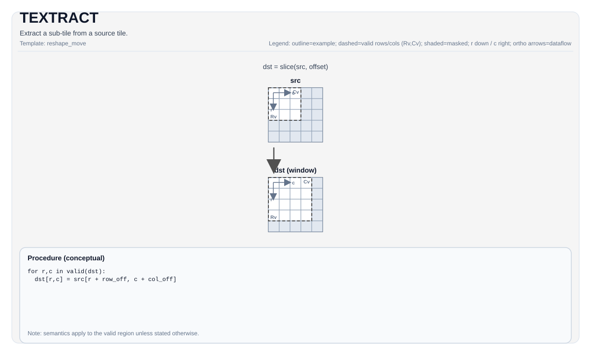

TEXTRACT¶
Tile Operation Diagram¶

Introduction¶
Extract a smaller sub-tile from a larger source tile.
Math Interpretation¶
Conceptually copies a smaller window starting at (indexRow, indexCol) from the larger src tile into dst. Exact mapping depends on tile layouts.
Let R = dst.GetValidRow() and C = dst.GetValidCol(). For 0 <= i < R and 0 <= j < C:
Assembly Syntax¶
Synchronous form:
%dst = textract %src[%r0, %r1] : !pto.tile<...> -> !pto.tile<...>AS Level 1 (SSA)¶
%dst = pto.textract %src, %idxrow, %idxcol : (!pto.tile<...>, dtype, dtype) -> !pto.tile<...>AS Level 2 (DPS)¶
pto.textract ins(%src, %idxrow, %idxcol : !pto.tile_buf<...>, dtype, dtype) outs(%dst : !pto.tile_buf<...>)C++ Intrinsic¶
Declared in include/pto/common/pto_instr.hpp:
template <typename DstTileData, typename SrcTileData, typename... WaitEvents>
PTO_INST RecordEvent TEXTRACT(DstTileData &dst, SrcTileData &src, uint16_t indexRow = 0, uint16_t indexCol = 0, WaitEvents &... events);
template <typename DstTileData, typename SrcTileData, ReluPreMode reluMode, typename... WaitEvents>
PTO_INST RecordEvent TEXTRACT(DstTileData &dst, SrcTileData &src, uint16_t indexRow, uint16_t indexCol, WaitEvents &... events);
template <typename DstTileData, typename SrcTileData, ReluPreMode reluMode = ReluPreMode::NoRelu,
typename... WaitEvents>
PTO_INST RecordEvent TEXTRACT(DstTileData &dst, SrcTileData &src, uint64_t preQuantScalar, uint16_t indexRow, uint16_t indexCol, WaitEvents &... events);
template <typename DstTileData, typename SrcTileData, typename FpTileData, ReluPreMode reluMode = ReluPreMode::NoRelu,
typename... WaitEvents>
PTO_INST RecordEvent TEXTRACT_FP(DstTileData &dst, SrcTileData &src, FpTileData &fp, uint16_t indexRow, uint16_t indexCol, WaitEvents &... events);
template <typename Dst0TileData, typename Dst1TileData, typename SrcTileData, typename... WaitEvents>
PTO_INST RecordEvent TEXTRACT(Dst0TileData &dst0, Dst1TileData &dst1, SrcTileData &src,
uint16_t indexRow0 = 0, uint16_t indexCol0 = 0,
uint16_t indexRow1 = 0, uint16_t indexCol1 = 0, WaitEvents &... events);Constraints¶
General constraints / checks¶
DstTileData::DTypemust equalSrcTileData::DType.- Runtime bounds checks:
indexRow + DstTileData::Rows <= SrcTileData::RowsindexCol + DstTileData::Cols <= SrcTileData::Cols
A2A3 implementation checks¶
- Supported element types:
int8_t,half,bfloat16_t,float. - Source layout must satisfy one of the checked A2A3 extraction layouts:
(SFractal == ColMajor && isRowMajor), or(SFractal == RowMajor && !isRowMajor).
- In GEMV scenarios targeting
TileType::Left, the checked source layout also allows(SrcTileData::Rows == 1 && SrcTileData::isRowMajor). - Destination must be
TileType::LeftorTileType::Rightwith a target-supported fractal configuration.
A5 implementation checks¶
- Supported element types:
int8_t,hifloat8_t,float8_e5m2_t,float8_e4m3_t,half,bfloat16_t,float,float4_e2m1x2_t,float4_e1m2x2_t,float8_e8m0_t. - Source layout must satisfy one of the checked A5 extraction layouts:
- for
Left/Right:(SFractal == ColMajor && isRowMajor)or(SFractal == RowMajor && !isRowMajor) - for
ScaleLeft:(SFractal == RowMajor && isRowMajor) - for
ScaleRight:(SFractal == ColMajor && !isRowMajor)
- for
- In GEMV scenarios targeting
Left, the checked source layout also allows(SrcTileData::Rows == 1 && SrcTileData::isRowMajor). - Destination supports
TileType::Mat -> TileType::Left/Right/Scale,TileType::Acc -> TileType::Mat(including relu, scalar-quant, and vector-quantized forms),TileType::Acc -> TileType::Vec, and specificTileType::Vec -> TileType::Matextraction paths. - The vector-quantized form additionally requires an
FpTileDatascaling operand, matching theTEXTRACT_FP(...)interface. - For
TileType::Acc -> TileType::Vecwith a 32-bit destination type (float/int32_t), when usingDualModeSplitNtheValidCol(before the split) must be a multiple of32.
Vec → Vec extraction path¶
In addition to the Mat/Acc -> ... paths above, TEXTRACT supports a TileType::Vec -> TileType::Vec extraction path (ND and NZ layouts), enforced via CheckTExtractVecToVecCommon:
DstTileData::DTypemust equalSrcTileData::DType.- Supported element types (both A2A3 and A5):
int8_t,uint8_t,int16_t,uint16_t,int32_t,uint32_t,half,bfloat16_t,float(any 1-/2-/4-byte standard type). This set differs from the primary tile path: it addsuint8_t/int16_t/uint16_t/int32_t/uint32_t, and on A5 it does not include the fp8/fp4 types. - ND path: source/destination row strides must be 32-byte aligned;
Dstrows/cols must not exceedSrc.
ND → 2×NZ extraction path¶
The two-destination TEXTRACT overload extracts two independent ND sub-windows from a single ND source and writes each as a separate NZ destination in one call. It is implemented entirely with vector-frontend intrinsics (no MTE copy).
- Source must be a
TileType::VecND tile (BLayout::RowMajor,SLayout::NoneBox); both destinations must beTileType::VecNZ tiles (BLayout::ColMajor,SLayout::RowMajor). DstTileData::DTypemust equalSrcTileData::DType.- Each window is placed by its own
(indexRow, indexCol). Runtime bounds checks per windowk:indexRow_k + dst_k.GetValidRow() <= SrcTileData::RowsindexCol_k + dst_k.GetValidCol() <= SrcTileData::Cols
- Structural constraints (same as the Vec → Vec paths): destination
Colsmust bec0-aligned (NZ fractal width), and source row-stride bytes must be 32-byte aligned. - Supported element types:
- A5:
int8_t,half,bfloat16_t,float,int32_t,hifloat8_t,float8_e4m3_t,float8_e5m2_t,float8_e8m0_t,float4_e2m1x2_t,float4_e1m2x2_t. - A2A3:
int8_t,half,bfloat16_t,float,int32_t.
- A5:
-
Output compact mode:
- A5 supports plain NZ (default) and the NZ+1 bank-conflict optimization (
CompactMode::RowPlusOne). - A2A3 supports plain NZ only.
- A5 supports plain NZ (default) and the NZ+1 bank-conflict optimization (
-
Index alignment (a window's source base is
srcStart = src + indexRow*rowStride + indexCol):- A5 (SIMD) handles a
c0-unalignedindexCol(sub-c0column origin) via an element-exact unaligned load/store path;c0-aligned windows take the faster block path. - A2A3 (vec-core) vector engines require the operand base to be 32-byte
aligned, and
dav-c220-vechas no unaligned vector load (vlds/vstsare unavailable). A window therefore takes the vector path only when its source base is 32-byte aligned, i.e.indexCol * sizeof(T)is a multiple of 32. Windows whoseindexColdoes not satisfy this (and1×1windows) use an element-wise scalar copy, which has no alignment constraint.
- A5 (SIMD) handles a
- A2A3 vector paths (32-byte-aligned source base):
vcopyreinterprets data at 16-bit granularity (its smallest element width; there is no 8-bitvcopy). 2-/4-byte types andint8with an evenvalidColmap directly throughvcopy.int8with an oddvalidCol(odd byte count) uses a fully vector widen path —vconv_s82f16(int8→half) into a scratch, the ND→NZ reshape inhalf, thenvconv_f162s8(half→int8) into the NZ destination (allint8values round-trip losslessly throughhalf).
| Arch | Mode | Implementation |
|---|---|---|
| A5 / A2A3 | 1×1 |
scalar copy |
| A5 (SIMD) | c0-aligned indexCol |
vlds + vsstb |
| A5 (SIMD) | c0-unaligned indexCol |
vldas + vldus + vsts |
| A2A3 (vec-core) | unaligned source base not 32-byte aligned (indexCol*sizeof(T) % 32 != 0) |
scalar copy |
| A2A3 (vec-core) | aligned base, 2-/4-byte or even-validCol int8 |
vcopy with 16-bit reinterpretation |
| A2A3 (vec-core) | aligned base, odd-validCol int8 |
vconv_s82f16 + vconv_f162s8 widen path |
Examples¶
Auto¶
#include <pto/pto-inst.hpp>
using namespace pto;
void example_auto() {
using SrcT = Tile<TileType::Mat, float, 16, 16, BLayout::RowMajor, 16, 16, SLayout::ColMajor>;
using DstT = TileLeft<float, 16, 16>;
SrcT src;
DstT dst;
TEXTRACT(dst, src, /*indexRow=*/0, /*indexCol=*/0);
}Manual¶
#include <pto/pto-inst.hpp>
using namespace pto;
void example_manual() {
using SrcT = Tile<TileType::Mat, float, 16, 16, BLayout::RowMajor, 16, 16, SLayout::ColMajor>;
using DstT = TileLeft<float, 16, 16>;
SrcT src;
DstT dst;
TASSIGN(src, 0x1000);
TASSIGN(dst, 0x2000);
TEXTRACT(dst, src, /*indexRow=*/0, /*indexCol=*/0);
}ASM Form Examples¶
Auto Mode¶
# Auto mode: compiler/runtime-managed placement and scheduling.
%dst = pto.textract %src, %idxrow, %idxcol : (!pto.tile<...>, dtype, dtype) -> !pto.tile<...>Manual Mode¶
# Manual mode: resources must be bound explicitly before issuing the instruction.
# Optional for tile operands:
# pto.tassign %arg0, @tile(0x1000)
# pto.tassign %arg1, @tile(0x2000)
%dst = pto.textract %src, %idxrow, %idxcol : (!pto.tile<...>, dtype, dtype) -> !pto.tile<...>PTO Assembly Form¶
%dst = textract %src[%r0, %r1] : !pto.tile<...> -> !pto.tile<...>
# AS Level 2 (DPS)
pto.textract ins(%src, %idxrow, %idxcol : !pto.tile_buf<...>, dtype, dtype) outs(%dst : !pto.tile_buf<...>)